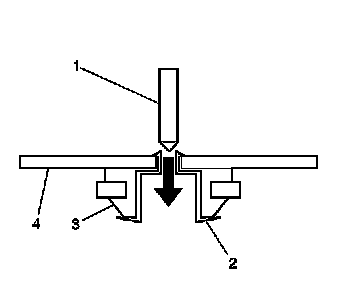
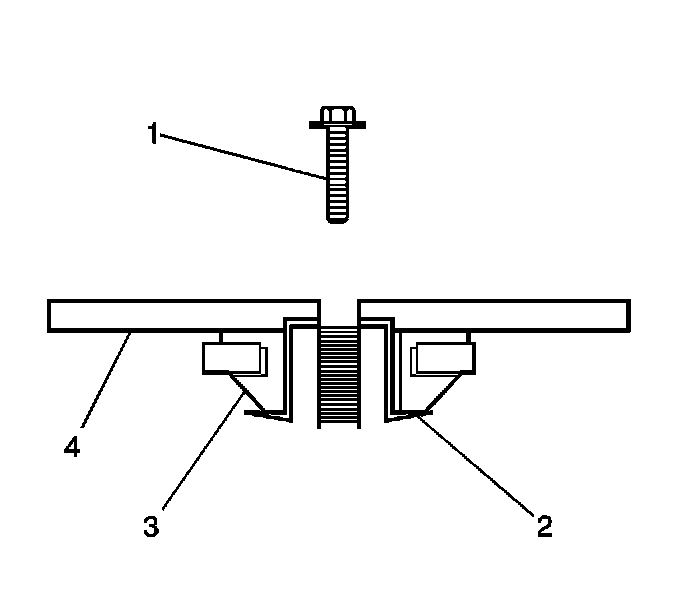
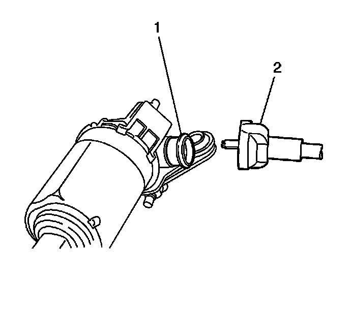

Brake and Accelerator Pedal Adjuster Actuator Motor Replacement (RHD)
Brake and Accelerator Pedal Adjuster Actuator Motor Replacement (RHD)
Removal Procedure
1. Remove the adjustable accelerator pedal from the vehicle. Refer to Accelerator Pedal Assembly Replacement (LHD) (Accelerator Pedal Assembly Replacement (LHD))Accelerator Pedal Assembly Replacement (RHD) (Accelerator Pedal Assembly Replacement (RHD)) .

2. To release the adjustable pedal cable from the adjustable pedal motor, carefully compress the collar of the cable and pull outward from the motor.
Important: Only remove the staked material or the head of the insert.

3. To remove the head of the factory motor inserts use a 3/16 inch drill bit. Carefully drill the head of the factory motor insert (2) from the bottom side of the adjustable pedal motor bracket (4).
4. Remove the adjustable pedal motor.
Installation Procedure
1. Position the adjustable brake pedal motor to the adjustable brake pedal motor bracket.
Important: Remove the new motor inserts, reuse original inserts.

1. Install the motor insert (2) into the motor grommet (3) of the new motor.
Notice: Refer to Fastener Notice (Fastener Notice) .
2. Install the motor to motor bracket bolts (1) to secure the motor to the motor plate (4).
Tighten the bolts to 4 N.m (36 lb in).

Important: Ensure the adjustable brake pedal and the adjustable accelerator pedal are synchronized in the full forward, front of vehicle position.
2. Using a suitable tool, slowly rotate the exposed end of the adjustable brake pedal actuator cable until the brake pedal assembly is in the full forward, front of vehicle position. Do not use excessive rotating force on the adjustable brake pedal actuator cable.
Do not exceed 0.5 N.m (4.43 lb in) of rotating force.
3. Connect the adjustable accelerator pedal cable to the motor.
4. Using a square drive tool on the adjustable pedal motor, carefully rotate the adjustable pedal motor until the accelerator pedal is in the full forward, front of vehicle position. Do not use excessive rotating force on the adjustable pedal motor.
Do not exceed 0.5 N.m (4.43 lb in) of rotating force.
5. Install the adjustable accelerator pedal to the vehicle. Refer to Accelerator Pedal Assembly Replacement (LHD) (Accelerator Pedal Assembly Replacement (LHD))Accelerator Pedal Assembly Replacement (RHD) (Accelerator Pedal Assembly Replacement (RHD)) .